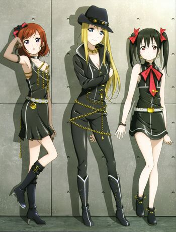

BiBi

BiBi is a sub-unit under μ’s. The unit consists of three members, namely leader Eli Ayase, Maki Nishikino, and Nico Yazawa.
| Maki Nishikino | Songs | BiBi | Gallery |
BiBi is a sub-unit under μ’s. The unit consists of three members, namely leader Eli Ayase, Maki Nishikino, and Nico Yazawa.
| BiBi  |
|
|---|---|
| Members | Maki Nishikino, Eli Ayase, Nico Yazawa |
In the anime, the unit was formed by drawing lots.
In real life, the unit was formed in phases:
Due to the image presented by the members, many of the name submissions to the staff had an adult and graceful feel to them. BiBi's name was meant to symbolize the sharp style and fashion exhibited by members of the group. Other highlighted submissions included "Grace Maiden" and "Shiny Silhouette."